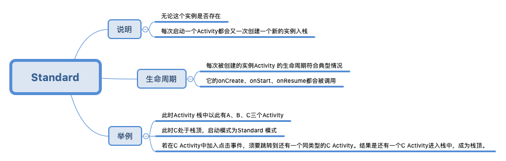

一.启动模式
Activity 一共有四种 launchMode ：standard 、singleTop 、singleTask 、singleInstance 。

Standard 模式（默认模式）
- 说明：每次启动一个 Activity 都会又一次创建一个新的实例入栈，无论这个实例是否存在。
- 生命周期：每次被创建的实例 Activity 的生命周期符合典型情况，它的 onCreate 、onStart 、onResume 都会被调用。
- 举例：此时 Activity 栈中以此有 A 、B 、C 三个 Activity ，此时C处于栈顶，启动模式为 Standard 模式。若在 C Activity 中加入点击事件，须要跳转到还有一个同类型的 C Activity 。结果是还有一个 C Activity 进入栈中，成为栈顶。
SingleTop 模式（栈顶复用模式）
- 说明：分两种处理情况：须要创建的 Activity 已经处于栈顶时，此时会直接复用栈顶的 Activity 。不会再创建新的 Activity ；若须要创建的 Activity 不处于栈顶，此时会又一次创建一个新的 Activity 入栈，同 Standard 模式一样。
- 生命周期：若情况一中栈顶的 Activity 被直接复用时，它的 onCreate 、onStart 不会被系统调用，由于它并没有发生改变。可是一个新的方法 onNewIntent 会被回调（ Activity 被正常创建时不会回调此方法）。
- 举例：此时 Activity 栈中以此有 A 、B 、C 三个 Activity ，此时 C 处于栈顶，启动模式为 SingleTop 模式。情况一：在 C Activity 中加入点击事件，须要跳转到还有一个同类型的 C Activity 。结果是直接复用栈顶的 C Activity。情况二：在 C Activity 中加入点击事件，须要跳转到还有一个 A Activity。结果是创建一个新的 Activity 入栈。成为栈顶。
SingleTask 模式（栈内复用模式）
- 说明：若须要创建的 Activity 已经处于栈中时，此时不会创建新的 Activity ，而是将存在栈中的 Activity 上面的其他 Activity 所有销毁，使它成为栈顶。
- 如果是在别的应用程序中启动它，则会新建一个 task ，并在该task中启动这个 Activity ，singleTask 允许别的 Activity 与其在一个 task 中共存，也就是说，如果我在这个 singleTask 的实例中再打开新的 Activity ，这个新的 Activity 还是会在 singleTask 的实例的 task 中。
- 生命周期：同 SingleTop 模式中的情况一同样。仅仅会又一次回调 Activity 中的 onNewIntent 方法
- 举例：此时 Activity 栈中以此有 A 、B 、C 三个 Activity 。此时 C 处于栈顶，启动模式为 SingleTask 模式。情况一：在 C Activity 中加入点击事件，须要跳转到还有一个同类型的 C Activity 。结果是直接用栈顶的 C Activity 。情况二：在 C Activity 中加入点击事件，须要跳转到还有一个 A Activity 。结果是将 A Activity 上面的 B 、C 所有销毁，使 A Activity 成为栈顶。
SingleInstance 模式（单实例模式）
- 说明：SingleInstance 比较特殊，是全局单例模式，是一种加强的 SingleTask 模式。它除了具有它所有特性外，还加强了一点：只有一个实例，并且这个实例独立运行在一个 task 中，这个 task 只有这个实例，不允许有别的 Activity 存在。
- 这个经常使用于系统中的应用，比如 Launch 、锁屏键的应用等等，整个系统中仅仅有一个！所以在我们的应用中一般不会用到。了解就可以。
- 举例：比方 A Activity 是该模式，启动 A 后。系统会为它创建一个单独的任务栈，由于栈内复用的特性。兴许的请求均不会创建新的 Activity ，除非这个独特的任务栈被系统销毁。
二.启动模式的使用方式

在 Manifest.xml 中指定 Activity 启动模式
- 一种静态的指定方法
- 在 Manifest.xml 文件里声明 Activity 的同一时候指定它的启动模式
- 这样在代码中跳转时会依照指定的模式来创建 Activity 。
启动 Activity 时。在 Intent 中指定启动模式去创建 Activity
- 一种动态的启动模式
- 在 new 一个 Intent 后
- 通过 Intent 的 addFlags 方法去动态指定一个启动模式。
注意：以上两种方式都能够为 Activity 指定启动模式，可是二者还是有差别的。
- 优先级：动态指定方式即另外一种比第一种优先级要高，若两者同一时候存在，以另外一种方式为准。
- 限定范围：第一种方式无法为 Activity 直接指定 FLAG_ACTIVITY_CLEAR_TOP 标识，另外一种方式无法为 Activity 指定 singleInstance 模式。
三.启动模式的实际应用场景
这四种模式中的 Standard 模式是最普通的一种，没有什么特别注意。而 SingleInstance 模式是整个系统的单例模式，在我们的应用中一般不会应用到。所以，这里就具体解说 SingleTop 和 SingleTask 模式的运用场景：
SingleTask 模式的运用场景
- 最常见的应用场景就是保持我们应用开启后仅仅有一个 Activity 的实例。
- 最典型的样例就是应用中展示的主页（ Home 页）。
- 假设用户在主页跳转到其他页面，运行多次操作后想返回到主页，假设不使用 SingleTask 模式，在点击返回的过程中会多次看到主页，这明显就是设计不合理了。
SingleTop 模式的运用场景
- 假设你在当前的 Activity 中又要启动同类型的 Activity
- 此时建议将此类型 Activity 的启动模式指定为 SingleTop ，能够降低Activity的创建，节省内存！
注意：复用 Activity 时的生命周期回调
- 这里还须要考虑一个 Activity 跳转时携带页面參数的问题。
- 由于当一个 Activity 设置了 SingleTop 或者 SingleTask 模式后，跳转此 Activity 出现复用原有 Activity 的情况时，此 Activity 的 onCreate 方法将不会再次运行。onCreate 方法仅仅会在第一次创建 Activity 时被运行。
- 而一般 onCreate 方法中会进行该页面的数据初始化、UI 初始化，假设页面的展示数据无关页面跳转传递的參数，则不必操心此问题
- 若页面展示的数据就是通过 getInten() 方法来获取，那么问题就会出现：getInten() 获取的一直都是老数据，根本无法接收跳转时传送的新数据！
以下，通过一个样例来具体解释：
以上代码中的 CourseDetailActivity 在配置文件里设置了启动模式是 SingleTop 模式，依据上面启动模式的介绍可得知，当 CourseDetailActivity 处于栈顶时。
再次跳转页面到 CourseDetailActivity 时会直接复用原有的 Activity ，并且此页面须要展示的数据是从 getIntent() 方法得来，可是 initData() 方法不会再次被调用，此时页面就无法显示新的数据。
当然这样的情况系统早就为我们想过了，这时我们须要另外一个回调 onNewIntent（Intent intent）方法。此方法会传入最新的 intent ，这样我们就能够解决上述问题。这里建议的方法是又一次去 setIntent 。然后又一次去初始化数据和 UI 。
代码例如以下所看到的：
这样，在一个页面中能够反复跳转并显示不同的内容。
四.快速启动一个 Activity
这个问题其实也是比较简单的，就是不要在 Activity 的 onCreate 方法中执行过多繁重的操作，并且在 onPasue 方法中同样不能做过多的耗时操作。
五.Activity 的 Flags
- 标记位既能够设定Activity的启动模式，如同上面介绍的，在动态指定启动模式，比方 FLAG_ACTIVITY_NEW_TASK 和 FLAG_ACTIVITY_SINGLE_TOP 等。它还能够影响 Activity 的运行状态 ，比方 FLAG_ACTIVITY_CLEAN_TOP 和 FLAG_ACTIVITY_EXCLUDE_FROM_RECENTS 等。
- 以下介绍几个基本的标记位，切勿死记，理解几个就可以，须要时再查官方文档。
FLAG_ACTIVITY_NEW_TASK
作用是为 Activity 指定 “SingleTask” 启动模式。跟在 AndroidMainfest.xml 指定效果同样
FLAG_ACTIVITY_SINGLE_TOP
作用是为 Activity 指定 “SingleTop” 启动模式，跟在 AndroidMainfest.xml 指定效果同样。
FLAG_ACTIVITY_CLEAN_TOP
- 具有此标记位的 Activity ，启动时会将与该 Activity 在同一任务栈的其他 Activity 出栈。
- 一般与 SingleTask 启动模式一起出现。
- 它会完毕 SingleTask 的作用。
- 但事实上 SingleTask 启动模式默认具有此标记位的作用
FLAG_ACTIVITY_EXCLUDE_FROM_RECENTS
- 具有此标记位的 Activity 不会出如今历史 Activity 的列表中
- 使用场景：当某些情况下我们不希望用户通过历史列表回到 Activity 时，此标记位便体现了它的效果。
- 它等同于在 xml 中指定 Activity 的属性.
六.onNewInstent()方法什么时候执行
这个是启动模式中的了，当此 Activity 的实例已经存在，并且此时的启动模式为 SingleTask 和 SingleInstance ，另外当这个实例位于栈顶且启动模式为 SingleTop 时也会触发 onNewInstent()。
七.启动流程
- 注意！这里并不是要回答 Activity 的生命周期！
- 3 分钟看懂 Activity 启动流程

...
...
听首歌放松一下！